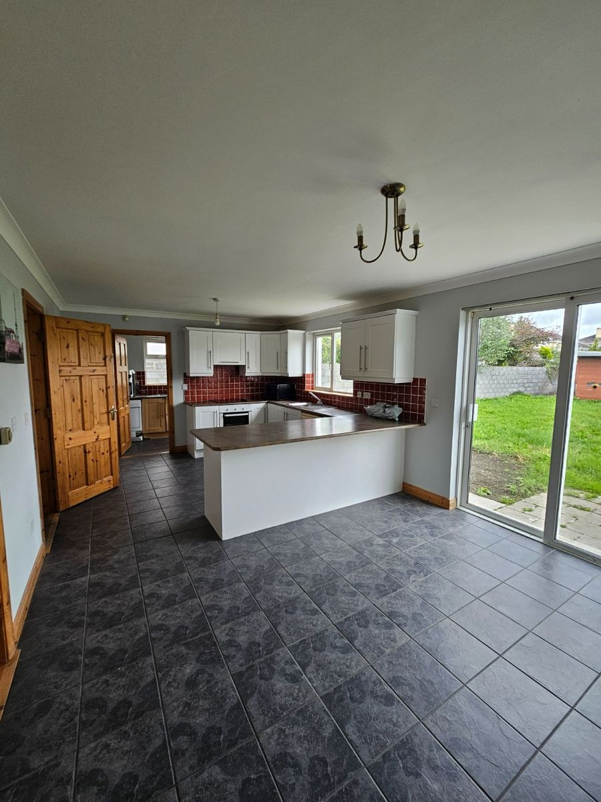
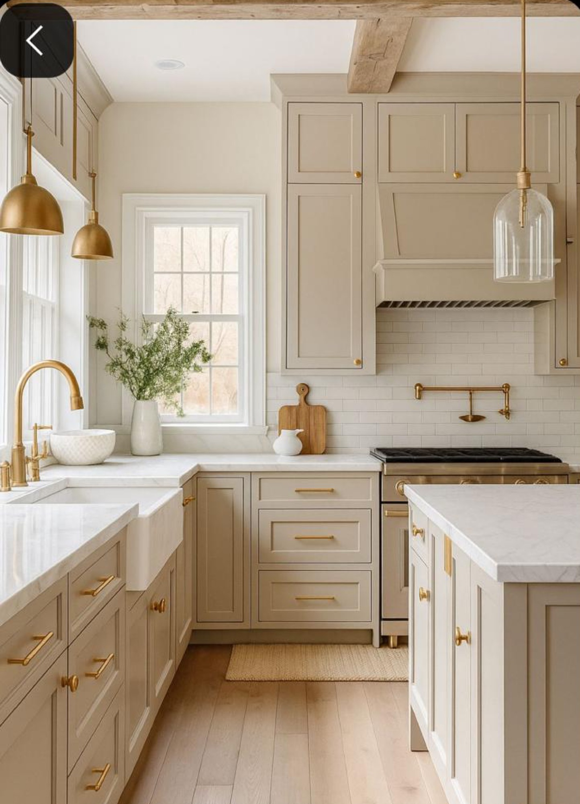
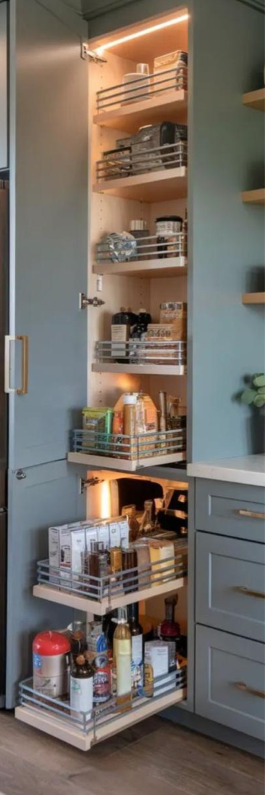
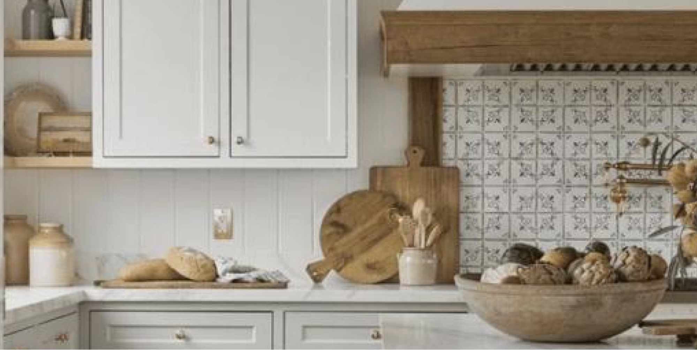
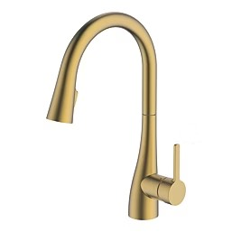
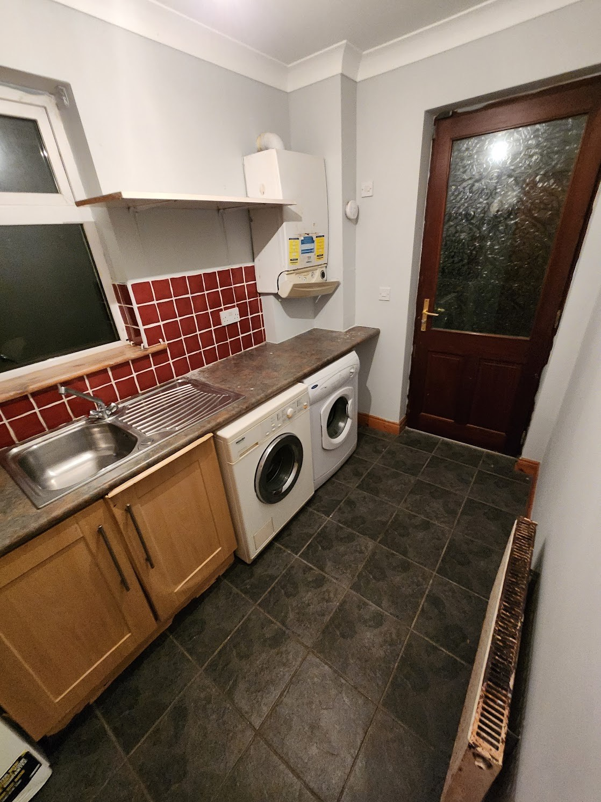
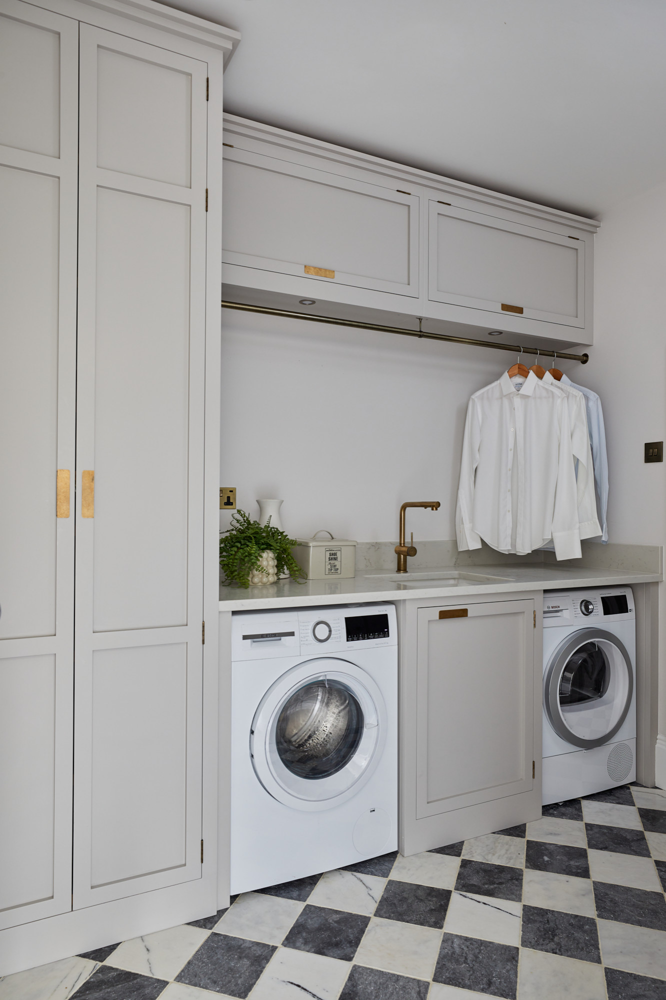

Kitchen 🍳
- Install white laminate countertops for a bright, low-maintenance finish.
- Fit shaker-style cabinets and drawers in a linen colour with brass hardware.
- Add an inset brushed-brass sink paired with a curved pull-out mixer tap.
- Plan efficient storage: deep drawers for pots, pull-outs for pantry items.
- Coordinate lighting to highlight prep areas and the new finishes.
Current Photos

Inspo Photos






Utility Room 🧺
- Install a durable laminate countertop for folding and storage.
- Stack a washer with heat-pump dryer to save floor space.
- Fit an inset stainless steel sink with drainer for handwashing.
- Add linen-colour shaker cabinets with brass finishes to match the kitchen.
- Plan ventilation for the dryer and ensure accessible service points.
Current Photos

Inspo Photos
